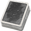
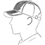

How to Play Ozzie Battler
How a turn plays out, a cheat sheet, the full rules and a glossary.
How a turn plays out
This is the real order the game uses. Steps 2 to 6 can be done in any order, as often as the rules for each action allow, then you press End Turn.
Before the first turn
Players draft four Battlers (P1, P2, P2, P1). Each Battler you draft adds its signature card to your starting deck. That deck otherwise starts as 7 Pocket Change and 3 Bit of Biffo, then is shuffled.
All four Battlers' cards are shuffled into the shared Bar deck, and 5 face-up Bar cards are dealt. A venue is chosen (RSL, Servo, Footy Oval, Beach, or B&S Ball).
Hands are dealt once, and that deal is not taxed: at a normal venue Player 1 draws 4 cards and Player 2 draws 5; at the B&S Ball the hand size is 6, so the deal is 5 and 6. You do not start with Coin or Punch. Player 2's first-turn bonus is +1 Coin at the RSL, Servo, Footy Oval or Beach, and +3 Coin at the B&S Ball.

Start of your turn
Things happen automatically, in a set order: the turn counter goes up, any Coin owed to you arrives, your Battlers' boons and drawbacks resolve, your Mates run their "Each turn" effects, and Cred tricks that fire at the start of the turn run last.
You then play the turn from this resource pool. Pocket Change is an Action that gives 1 Coin; Bit of Biffo is an Action that gives 1 Punch. Those are how most opening turns get any resources at all.
See the exact start-of-turn order
- The turn counter goes up. If this is Player 1's turn, it is at least the third turn of the match, and Wild cards are on in Settings, there is a 25% chance a wild hits both players (Drop Bear Attack, Magpie Swooping Season, Power Cut, Schoolies Invasion, or The Boss Rings).
- Your personal turn count goes up. Card Tax for this turn is reset (draws this turn start at 0).
- If this is at least your 8th personal turn and all four Battlers already call you Your Bro, you win by favour here and the turn stops.
- Pending Coin from last turn is granted (including Player 2's first-turn bonus, and Coin from rustled Sheep). Pending Punch reductions are applied. Per-turn flags are cleared (buys, Shout a Round, Brekky, Buy Shares, combo, and so on).
- If The Cowboy has a Bone to Pick with you, a stray wanders off: you lose 1 Sheep, or 1 Coin if you have none. A working Kelpie stops this.
- If you drafted The Cowboy, he does not have a Bone to Pick with you, and you hold fewer than 3 Sheep, you gain 1 Sheep.
- If you shouted a round last turn, the +2 Cred is added now.
- If Old Mate's Long Yarn hit you last turn, one random card is discarded from your hand.
- Bar locks that were placed against someone else expire when their owner starts a turn again.
- Your Bro boons and Bone to Pick drawbacks resolve, in Battler order. Examples: Pub Owner Your Bro is +3 Coin; Eshay Your Bro is +2 Punch; Mullet Head Your Bro is +2 Coin before your personal turn 5, then +2 Punch.
- If you drafted Grey Nomad, Long Way Round may grant Cred here. This is not gated on Your Bro.
- Each of your Mates that is not Locked Up runs its "Each turn" effect. Locked Up Mates tick down a turn and do nothing.
- A pending Dusty Track penalty, if any, then cuts your Punch (min 0).
- Cred tricks that fire at the start of the turn run last. The main one is Copper's Move along: if Copper calls you Your Bro and the opponent has 3 or more Mates out, you take 2 of their Cred.
Play cards from your hand
Actions resolve and go to your played pile (they are discarded at end of turn, and come back when you reshuffle). Mates stay on your table. There is no Coin cost to play a card from your hand; a few opponent Mates can tax you 1 or more Coin for playing a Mate.
Combos. When you play a Mate, if you already have another Mate of that same Battler on the table, or you already played one this turn, that Battler's combo fires immediately — once a turn. After the combo effect, Rep is checked: if one of that Battler's Good Rep partners calls you Your Bro, you gain 1 Cred; if a Bad Rep rival does, you lose 1 Cred; one of each cancels; never more than +1 or -1 from Rep on that combo.
Attack
Spend Punch to hit an opponent's Mate (damage sticks until healed; at 0 Toughness it is KO'd and goes to their discard). If they have a Steps In Mate, your Punch must go into those first. Team Huddle (Sport Fanatic's combo) stops attacks on their next turn.
Buy from the Bar
Pay Coin equal to the card's cost, plus or minus any taxes and discounts. A bought Action or Mate goes into your discard pile — not your hand and not straight into play. A bought Shout resolves immediately and never joins your deck. The empty Bar slot is then restocked.
Shout a Round, Brekky and Buy Shares
Shout a Round (once a turn): pay 3 Coin (5 if The Protester is picketing you), put a Pocket Change into the opponent's discard pile, and you will gain +2 Cred at the start of your next turn.
Brekky (one item a turn, each item once per game, free): Sausage Sizzle gives +2 Coin; Meat Pie gives +2 Punch; Black Spread Sanger draws 2 cards; Burnett Brew Ginger Beer heals your Mates by 1 and gives +1 Cred.
Buy Shares (once a turn): pay 1 Coin to put a Stack of Cash (an Action that gives 2 Coin) into your discard pile.

Earn favour
(exactly one climb per turn): pick one of a Battler's three favour ways, pay or meet its cost, and pull that rope one step your way. Climbing out of Bone to Pick costs more than climbing from Neutral to Your Bro. Some ways need a dice roll.
Cred tricks during the turn (only while that Battler calls you Your Bro, unless noted): for example Till count (Pub Owner) gives +1 Cred each time you buy a Bar card with printed cost 3 or more, max 2 a turn; Rally cry (The Protester) gives +2 Cred for each Shout card you buy and for Shout a Round; Buy respect (Rich Kid) lets you pay 3 Coin once a turn for +2 Cred; Party mix, Gear change, and similar tricks also fire as you play.
Card Tax
A mid-turn draw is taxable. That includes draws from cards, Your Bro effects, combos, Brekky, and KO triggers. The opening deal and your end-of-turn hand of 5 are not taxed.
The second taxable draw in the same turn costs 1 Cred, once that turn. If you have 0 Cred you still draw, but you lose 1 Rep (favour ways cost 1 more for the rest of the match). Later draws that turn do not tax you again.
End of your turn
When you press End Turn, this happens in this exact order:
- End-of-turn Cred tricks. Old Mate's Yarns can cash if you did not attack. Blue's Rage, if you still have 5 or more Punch at this moment, can cash here — this looks at Punch before Steps In soak. If you hold Sheep, Sheep Stations pays +1 Cred per Sheep, max +3 (Sheep are kept). This herd payment is not gated on Your Bro. Sport Fanatic's tip is also checked here, against the Coin and Punch you had just after start-of-turn effects.
- If the opponent has Steps In Mates and you still have Punch, that leftover Punch is automatically hit into those Mates, weakest first (the defender chooses if they have more than one). Team Huddle stops this. Only Punch that remains after the soak can become Cred. At the Beach, only that remainder is halved.
- If the opponent holds Sheep, you may optionally rustle: spend 1 leftover Punch per Sheep, max 2. A working Kelpie, or Muster Up's one-turn safety, stops rustling. Each rustled Sheep pays you +1 Coin at the start of your next turn; Punch spent rustling does not become Cred.
- Any Punch still left becomes Cred (halved at the Beach, rounding up on a half). Unspent Coin is lost. Punch and Coin both go to 0.
- Your played cards and the rest of your hand are discarded, and you draw a fresh hand of 5 (6 at the B&S Ball). This draw is not taxed.
- Neck and neck: if anyone has just reached 40 Cred, the race starts. From then on, if you finish a turn level with or behind your opponent, they win on Cred. If you finish in front, the game continues and they must beat your score on their turn.
- If the match has reached the turn cap (120), it is decided on Cred. Otherwise the opponent becomes current and their start-of-turn sequence runs.
A worked example turn
A mid-match turn at the RSL, with numbers the game would actually produce. Wild cards happen not to fire.
It is your 4th personal turn. You have 18 Cred; the opponent has 16. Pub Owner calls you Your Bro; Mullet Head, Copper and Sheila are Neutral. You have no Mates on the table and nothing pending from last turn. Your hand of 5, already drawn at the end of your previous turn, is: Pocket Change, Pocket Change, Bit of Biffo, Bowl-Cut Little Bro, Karaoke Cousin.
Start of turn
Coin and Punch start at 0. Pub Owner's boon gives +3 Coin. No Bone to Pick drawbacks, no Mates to tick. You now have 3 Coin, 0 Punch, 18 Cred.
3 Coin0 Punch18 Cred
Play
Two Pocket Change take you to 5 Coin. Bit of Biffo gives 1 Punch. You play Bowl-Cut Little Bro (a Mullet Head Mate, Steps In, Toughness 3). No combo yet — it is your first Mullet Head Mate. You then play Karaoke Cousin (another Mullet Head Mate, Steps In, Toughness 3). Business Up Front fires: you draw 1 card (your first taxable draw this turn, so no Card Tax), then must discard 1 card from your hand. After the five plays your hand was empty, so the card you just drew is discarded. You still have 5 Coin, 1 Punch, 18 Cred, two Mates on the table, and an empty hand. You cannot fire another combo this turn. Pub Owner is not a Good or Bad Rep partner of Mullet Head, so this combo does not shift Cred.
5 Coin1 Punch18 Cred
Buy
Cellar Hand is in the Bar at its printed cost of 2 Coin. You buy it. You now have 3 Coin. Cellar Hand goes into your discard (it will not be in play until you draw and play it later). The Bar slot restocks. Till count does not fire — that needs a printed cost of 3 or more.
3 Coin
Shout a Round
You pay 3 Coin. Coin goes to 0. The opponent gets a Pocket Change in their discard pile. You will gain +2 Cred at the start of your next turn. You do not climb favour this turn, and you do not use Brekky or Buy Shares.
0 Coin
End of turn
You have no Sheep. The opponent has no Steps In Mates, so your 1 leftover Punch is not soaked and becomes 1 Cred. Unspent Coin is already 0. You now have 19 Cred, 0 Coin, 0 Punch. Played cards (the two Pocket Change and the Bit of Biffo) are discarded, and you draw 5 new cards, untaxed. 19 Cred is not yet 40, so the race has not started. It becomes the opponent's turn.
19 Cred0 Coin0 Punch
At the start of your next turn, the shouted round would add +2 Cred first (to 21). Pub Owner would then give +3 Coin. Because you would already be on 20+ Cred, Bowl-Cut Little Bro and Karaoke Cousin would tick for Coin (2 and 2), not Punch.
Cheat sheet
| Term | What it means |
|---|---|
| Coin | Buy cards from the Bar and pay for favour. Spent or lost at the end of your turn. |
| Punch | KO the opponent's Mates. Punch you don't spend turns into Cred at the end of your turn. |
| Cred | Points. First to 40 - then you must finish every turn in front (Neck and neck). |
| Action | Play it for its effect, then it goes to your discard pile. |
| Mate | Stays on your table and works every turn until its Toughness runs out. |
| Locked Up | All of a card's abilities freeze (passives, each-turn effects, triggers, Steps In and immunities) until it's freed. It can still be hit. |
| Steps In | A Mate that soaks the opponent's Punch first. |
| Shout | A big one-off effect the moment you buy it. |
| Combo | Play 2 Mates of the same Battler (board counts) for a bonus, once a turn. Good Rep Bro: +1 Cred, Bad Rep Bro: -1 Cred. |
| Your Bro | Pull a Battler's favour rope to your side: their boon and Cred trick are yours. All 4 Bros wins, from your 8th turn. A warning pops up if your opponent is close. |
| Your turn | Play cards -> attack Mates -> buy from the Bar -> earn favour -> End Turn. You draw 5 new cards. |
| Card Tax | Drawing 2 or more cards in a turn costs 1 Cred, once that turn. If you have 0 Cred you still draw but lose 1 Rep (favour ways cost 1 more for the rest of the match). Your end-of-turn hand of 5 is not taxed. |
| Shout a Round | Once a turn pay 3 Coin (5 if the Protester is picketing you), your opponent gets a Pocket Change, you get +2 Cred next turn. |
| Brekky | 4 free one-off boosts, each once per game, one a turn, no Coin cost: Sausage Sizzle (+2 Coin), Meat Pie (+2 Punch), Black Spread Sanger (draw 2 cards), Burnett Brew Ginger Beer (heal your Mates by 1 and +1 Cred). |
| Buy Shares | Once a turn, pay 1 Coin to put a Stack of Cash (an Action that gives 2 Coin) into your discard pile. |
Full rules
Tap a heading to open it.
Goal & winning
Goal: reach 40 Cred, OR have all 4 Battlers at "Your Bro" with you from your 8th turn (you'll get a warning if your opponent is close).
Neck and neck: once anyone reaches 40 Cred the game keeps going. From then on you must finish every turn in front (strictly more Cred than your opponent). If you finish a turn level or behind, it's over and the leader wins. Example: P1 40, P2 41, P1 44, P2 43 - P1 wins 44 to 43. A BEAT X CRED! banner shows the number to beat.
Draft & the Bar
1. Draft. Players take turns picking Battlers (P1, P2, P2, P1) - 4 in play. Each Battler you pick adds its signature card to your starting deck. All 4 Battlers' cards are shuffled into the Bar deck; the Bar is the shared row of 5 face-up cards you buy from.
Your turn & resources
2. Your turn. Tap cards in your hand to play them. Resources:
- Coin: buy cards from the Bar or earn favour.
- Punch: KO enemy Mates or earn favour. Punch left at the end of your turn becomes Cred - but if the opponent has a Steps In Mate on the table, that spare Punch hits it first and only what's left becomes Cred.
- Cred: your score.
Unspent Coin is lost at end of turn. Then you discard everything and draw 5.
Card Tax: drawing 2 or more cards in a turn (from cards, Your Bro effects, combos or KO triggers — not your end-of-turn hand of 5) costs 1 Cred, once that turn. If you have 0 Cred you still draw but lose 1 Rep (favour ways cost 1 more for the rest of the match).
Player 2 gets +1 Coin on their first turn (+3 at the B&S Ball) to make up for going second.
Card types
- Action: play it, it goes to your discard pile and comes back when you reshuffle.
- Mate: stays in play and works every turn. Has Toughness - the opponent KOs it by spending that much Punch (tap their Mate). Damage sticks until healed.
- Locked Up: a Locked Up card has all of its abilities frozen while it is locked - passives, each-turn effects, triggers, Steps In and immunities. It stays on the table and can still be hit.
- Steps In (red shield): a Mate that steps in for its crew. While the opponent has one on the table, your Punch must go into their Steps In Mates first (you can still tap them yourself). At the end of your turn any unspent Punch is auto-hit into their Steps In Mates, weakest first, until they're KO'd or the Punch runs out - only the rest becomes Cred (the Beach halves just that rest). It still counts as a Mate for combos and rep. Team Huddle protects them too.
- Shout: takes effect the moment you buy it, then it's gone (never joins your deck).
Favour, Rep & Combos
3. Favour - a tug-of-war: each Battler has ONE favour rope between the two players, so they can only call one of you Your Bro and only have a Bone to Pick with one of you:
- Your Bro (rope on your side): you get that Battler's boon while you hold it - and your opponent is on their Bone to Pick.
- Neutral (rope in the middle): nothing special. Every rope starts here.
- Bone to Pick (rope on the opponent's side): a drawback every turn, while they're Your Bro.
Earning favour pulls the rope one step your way (and away from the opponent): from their side back to the middle, or from the middle to yours.
Earn favour (one step per turn): each Battler has 3 of their own favour ways - tap Earn favour on their tile to see them (e.g. bribe the Copper with Coin, show the Hard Head a 3+ Punch). Climbing out of Bone to Pick always costs more than Neutral -> Your Bro. Some ways need a dice roll.
Each tile shows + the boon, $ the Cred trick and - the penalty.
Cred tricks: while a Battler calls you Your Bro you also get their extra way to earn Cred (Sheila: guess their buy; Sport Fanatic: tip Punch or Coin; Rich Kid: buy respect...).
Mate combos: play a Mate while you already have (on board) or play this turn another Mate of the same Battler for that Battler's combo (once a turn). Combos are mostly tactical tricks; a few also touch the scores (Eshay's Swarm Up gives Punch, The Cowboy's Muster Up gives Sheep, Karen's Manager Please takes 1 Cred). Rep combos: if one of that Battler's Good Rep partners is Your Bro when the combo fires, +1 Cred; a Bad Rep rival as Your Bro, -1 Cred (one of each cancels; max +1/-1).
Rep: some Battlers get on (green) or clash (red). When one calls you Your Bro, their Good Rep partners' favour ways cost you 1 less and Bad Rep rivals' 1 more - and those partners' combos give you +1 / -1 Cred. Full list: Rep & Combos on the title or pause menu.
Some cards (Rack Off, Spill the Beans, Strongly Worded Letter) pull the rope of the opponent's best Battler one step your way.
Choosing what goes: when an effect makes you discard, sacrifice or send Mates home (Lad's Dash, Sheila's boon, favour ways that cost cards or Mates...), you pick which ones - tap them, then Confirm (or Pick for me). Back on your own plays / favour ways refunds cleanly; on a forced pick it only clears your selection. Effects that say at random stay random.
Venues, Wilds, Shout & Brekky
Venues: every match is at a venue with one twist (RSL, Servo, Footy Oval, Beach, B&S Ball) - pick it or let it be random.
Wild cards (Settings): now and then a random event hits both players - drop bears, magpies, power cuts, schoolies, the boss rings.
Shout a Round: once a turn pay 3 Coin, give your opponent a Pocket Change, get +2 Cred next turn.
Brekky: 4 free one-off brekky boosts - Sausage Sizzle, Meat Pie, Black Spread Sanger and Burnett Brew Ginger Beer - each once per game, one a turn. They cost no Coin.
Battlers
Battlers: boon (Your Bro) / Cred trick / drawback (Bone to Pick)
Pub Owner Economy & Coin
- Boon (Your Bro)
- +3 Coin at the start of your turn.
- Cred trick
- Till count: each Bar card you buy that costs 3+ = +1 Cred (max 2 a turn).
- Drawback (Bone to Pick)
- Start your turn 2 Coin in the red (your tab's overdue).
- Favour ways
- Settle Your Tab, Shout the Bar, Help Stack the Chairs
Sheila at the End of the Bar Peek & steal
- Boon (Your Bro)
- Start of turn: peek at the opponent's hand; they choose 1 card to discard.
- Cred trick
- Goss guess: call the type of their next first buy (Action/Mate/Shout). Right = +2 Cred.
- Drawback (Bone to Pick)
- Start of turn: she spills your business. Discard 1 card at random.
- Favour ways
- Buy Her a Drink, Swap the Goss, Keep Her Secret
The Protester Disruption & taxes
- Boon (Your Bro)
- Opponent's Shout a Round costs +2 Coin.
- Cred trick
- Rally cry: each Shout card you buy and each Shout a Round = +2 Cred.
- Drawback (Bone to Pick)
- Your Shout a Round costs +2 Coin (she's picketing you).
- Favour ways
- Sign the Petition, Bring Mates to the Rally, Chuck in for the Cause
Copper Locks, jail, fines
- Boon (Your Bro)
- Start of turn: lock up the opponent's toughest Mate for 1 turn.
- Cred trick
- Move along: start of turn, if they have 3+ Mates out, take 2 of their Cred.
- Drawback (Bone to Pick)
- Start of turn: your toughest Mate is Locked Up for 1 turn (does nothing).
- Favour ways
- Bribe with Coin, Pay Your Fines, Hand In a Troublemaker
Old Mate Calm, heal, draw
- Boon (Your Bro)
- Start of turn: draw 1 card and heal one Mate by 2.
- Cred trick
- Yarns: each turn you don't attack +1 Yarn. 2 Yarns auto-cash for +5 Cred.
- Drawback (Bone to Pick)
- Start of turn: he bends your ear. Discard 1 card at random.
- Favour ways
- Shout Him a Beer, Sit Through His Yarn, Help Fix His Ute
Eshay Fast Punch & steal
- Boon (Your Bro)
- +2 Punch at the start of your turn.
- Cred trick
- Flex: KO a Mate -> Cred equal to its Toughness / 2.
- Drawback (Bone to Pick)
- Start of turn: he nicks 1 Coin off you and gives it to the opponent next turn.
- Favour ways
- Back Him Up, Lend Him a Few Coin, Rate His Sick Kicks
Old School Hard Head Defence & Steps In Mates
- Boon (Your Bro)
- Your Mates have +2 Toughness. Start of turn: +1 Punch.
- Cred trick
- Can take a hit: their attack leaves your Mate standing -> +2 Cred (once per their turn).
- Drawback (Bone to Pick)
- Your Mates have -1 Toughness (min 1).
- Favour ways
- Show Your Best Punch, Stand Your Ground, Old School Respect
Rich Kid Big buys, buys favour
- Boon (Your Bro)
- Your first Bar buy each turn costs 2 less.
- Cred trick
- Buy respect: once a turn pay 3 Coin for +2 Cred.
- Drawback (Bone to Pick)
- Your first Bar buy each turn costs 2 more.
- Favour ways
- Flash the Cash, Big Spender, Drop His Dad's Name
Bogan Random risk
- Boon (Your Bro)
- Start of turn: roll a die. 4-6: +4 Cred. 1-3: -1 Cred.
- Cred trick
- Big arvo: play 4+ cards in a turn -> +2 Cred.
- Drawback (Bone to Pick)
- Start of turn: roll a die. 1-2: -2 Cred.
- Favour ways
- Back the Underdog, Footy Banter, Bring Snags to the Barbie
Mullet Head Two modes: early / late
- Boon (Your Bro)
- +2 Coin each turn before your turn 5, then +2 Punch.
- Cred trick
- Party mix: Action + Mate + Shout in one turn -> +5 Cred.
- Drawback (Bone to Pick)
- -1 Coin each turn before your turn 5, then -1 Punch.
- Favour ways
- Business Up Front, Party Out the Back, Rate His Mullet
Blue Chains & burn
- Boon (Your Bro)
- The first Action you play each turn resolves twice.
- Cred trick
- Rage: each time you lose Cred +1 Rage (max 5). Big turn (end with 5+ Punch): +1 Cred per Rage, then reset.
- Drawback (Bone to Pick)
- Start of turn: 1 burn to one of your Mates at random (or -1 Cred if none).
- Favour ways
- Light His Fuse, Chain Reaction, Take the Heat
Rev Head Fast starts, Coin + Punch
- Boon (Your Bro)
- +1 Coin and +1 Punch at the start of your turn.
- Cred trick
- Gear change: play cards in rising cost order. 2 in a row = +1 Cred, +1 per extra gear.
- Drawback (Bone to Pick)
- Start of turn: your car's in the shop. -1 Punch.
- Favour ways
- Rev Your Engine, Pull a Burnout, Wash and Wax His Car
Sport Fanatic Tackles, KOs for Cred
- Boon (Your Bro)
- Whenever you KO a Mate, gain 1 Cred.
- Cred trick
- Tipping: each turn tip Punch or Coin (which you'll gain more of). Right = +1 Cred, +1 more if right last turn too.
- Drawback (Bone to Pick)
- Start of turn: he's still sore about the result. -1 Cred.
- Favour ways
- Shout a Round of Ginger Beer, Back His Team, Show Him a Big Tackle
Grey Nomad Long-game highway blockers
- Boon (Your Bro)
- Cred: Long Way Round (turn÷3 each turn; +1 Cred when you Slow them).
- Cred trick
- Long Way Round: each turn gain Cred = turn÷3 (floor); also +1 Cred each time you Slow the opponent.
- Drawback (Bone to Pick)
- Start of turn: -1 Coin, or discard 1 at random if broke.
- Favour ways
- Fill the Thermos, Share the Map, Help Park the Van
Karen Cred-denial at the servo
- Boon (Your Bro)
- Cred: Formal Complaint — gain Cred equal to what you strip (max 4 stripped/turn).
- Cred trick
- Formal Complaint: whenever you make them lose Cred, gain that much Cred. Max 4 Cred stripped from them per turn.
- Drawback (Bone to Pick)
- Start of turn: -1 Coin (they complained about you).
- Favour ways
- Take a Ticket, Sign the Feedback Form, Bring Her the Manager
The Cowboy Herd economy & rustling
- Boon (Your Bro)
- Cred: Sheep Stations — +1 Cred per Sheep at the end of your turn (max +3). Sheep are kept.
- Cred trick
- Sheep Stations: Sheep tokens (max 6). At the end of your turn, +1 Cred per 1 Sheep (max +3); Sheep are kept. The drafter gains +1 Sheep at the start of their turn while they have fewer than 3, unless he has a Bone to Pick with them. A stray wanders off: -1 Sheep (or -1 Coin if none); a working Kelpie stops it.
- Drawback (Bone to Pick)
- A stray wanders off: -1 Sheep at the start of your turn (a working Kelpie stops it). If you have no Sheep, -1 Coin.
- Favour ways
- Help With the Muster, Shout Him a Counter Lunch, Mend the Boundary Fence
Tips
Tips: tap (or hover on PC) any coloured word for a pop-up explainer. Tap Inspect then any card to read it big. Use Play All to dump your hand quickly. Hot-seat: pass the device when the screen says so.
Combos & Rep
Every Battler has a Mate combo. It fires when you play a Mate and you already have another Mate of that same Battler on the table, or you already played one this turn. A combo fires once a turn.
Most combos are tactical, not a direct score spike. Three that do touch the board in a noticeable way:
- Business Up Front (Mullet Head): draw 1 card, then discard 1 card from your hand.
- Swarm Up (Eshay): gain 2 Punch for each Eshay Mate you have in play. With 3 or more, also steal 1 Coin.
- Muster Up (The Cowboy): gain 2 Sheep, and your herd can't be rustled on the opponent's next turn.
Rep is the web of who gets on (Good Rep) and who clashes (Bad Rep). When a Battler calls you Your Bro, their Good Rep partners' favour ways cost you 1 less (minimum 1) and their Bad Rep rivals' ways cost 1 more.
The same relationships apply when a combo fires. If one of that Battler's Good Rep partners also calls you Your Bro, the combo is worth +1 Cred. If a Bad Rep rival does, it is worth -1 Cred. One of each cancels out. A combo is never worth more than +1 or -1 Cred from Rep. Example: Bogan and Mullet Head are Good Rep partners, so if Bogan already calls you Your Bro and you fire Business Up Front, you also gain 1 Cred.
The in-game Rep & Combos screen lists every pairing and every combo.
Glossary
Show all terms
- 20+ Cred
- The half of a two-part card that works once your Cred is 20 or more (the other half works under 20).
- A stray wanders off
- The Cowboy's Bone to Pick: at the start of your turn you lose 1 Sheep (a working Kelpie stops it). If you have no Sheep, you lose 1 Coin instead.
- Action
- Card type. Play it from your hand for its effect, then it goes to your discard pile and comes back when your deck reshuffles.
- Bad Rep
- Battlers who clash. While one is Your Bro: the other's favour ways cost you 1 more, and when the other's combo fires you lose 1 Cred.
- Bar lock
- A lock on a Bar card, not a Mate: your opponent can't buy that Bar card on their next turn (Sarge on the Beat, Parked Across Two Bays, Picket Line).
- Big arvo
- Bogan's Cred trick: play 4+ cards in a turn for +2 Cred.
- Bone to Pick
- Favour rope on the opponent's side: that Battler's drawback hits you every turn (and they're the opponent's Bro).
- boon
- What a Battler does for you every turn while they're Your Bro (the green + line on their tile).
- Bounce
- Megaphone: one opponent Mate (Toughness 4 or less) goes back into their hand - they have to play it again. Not a KO.
- Brekky
- 4 free one-off brekky boosts each game (Sausage Sizzle, Meat Pie, Black Spread Sanger, Burnett Brew Ginger Beer). Each works once a game, one a turn. They cost nothing.
- Burn
- Damage from a card effect instead of Punch (e.g. Bushfire Temper, Blue's drawback). It sticks like Punch damage until healed and KOs a Mate the same way.
- Bush
- Cowboy cards count as Bush cards (Muster, Kelpie, Playing for Sheep Stations and the rest of his kit). Playing for Sheep Stations musters an extra Sheep if you already played another Bush card this turn.
- Buy respect
- Rich Kid's Cred trick: once a turn pay 3 Coin for +2 Cred.
- Buy Shares
- Dock button, once a turn: pay 1 Coin and a Stack of Cash goes into your discard pile. When you draw and play it later: +2 Coin.
- Can take a hit
- Hard Head's Cred trick: when the opponent attacks one of your Mates and it's still standing, +2 Cred (once per their turn).
- Card Tax
- Drawing 2 or more cards in a turn (from cards, Your Bro effects, combos or KO triggers — not your end-of-turn hand of 5) costs 1 Cred, once that turn. If you have 0 Cred you still draw but lose 1 Rep: your favour ways cost 1 more for the rest of the match.
- Coin
- Your spending money this turn. Spend it in the Bar, on favour ways, Shout a Round (3 Coin, or 5 if the Protester is picketing you) or Buy Shares (1 Coin). Unspent Coin is lost at the end of your turn. Brekky is free.
- Combo
- Once a turn: play a Mate while another Mate of the same Battler is on your table (or played this turn) and that Battler's combo fires. Rep counts too: a Good Rep partner as Your Bro +1 Cred, a Bad Rep rival -1 (max ±1).
- Cred
- The score. Reach 40 Cred, then finish every turn in front of your opponent to win (Neck and neck).
- Cred trick
- A Battler's extra way to earn Cred, on while they call you Your Bro (the gold $ line on their tile).
- Deck
- Your draw pile (the number on the deck icon). When it runs out, your discard pile is shuffled into a new deck.
- Discard
- Your used-cards pile (the number on the discard icon). Played cards and your leftover hand go here at the end of the turn; it becomes your deck again when the deck runs out. To discard = move a card from your hand to this pile.
- Draw
- Take the top card of your deck into your hand. Drawing 2 or more cards in a turn costs Card Tax.
- drawback
- What a Battler does to you every turn while you have a Bone to Pick with them (the red - line on their tile).
- Favour
- The tug-of-war rope you share with each Battler: Bone to Pick, Neutral or Your Bro. Earn favour to pull it one step your way (once a turn).
- favour rope
- One rope per Battler between the two players. It sits on one side (that player's Your Bro, the other's Bone to Pick) or in the middle (Neutral). Every rope starts in the middle.
- favour ways
- Each Battler's 3 ways to earn favour (pay Coin, Punch, Cred, cards or Mates, or show something this turn). One climb a turn. Climbing out of a Bone to Pick costs more.
- Flex
- Eshay's Cred trick: KO a Mate and gain Cred equal to its Toughness ÷ 2 (rounded up).
- Formal Complaint
- Karen's Cred trick: whenever you make the opponent lose Cred, you gain that much. Max 4 stripped from them a turn.
- Gear change
- Rev Head's Cred trick: play cards in rising cost order. 2 in a row = +1 Cred, +1 more for each extra gear.
- Good Rep
- Battlers who get on. While one is Your Bro: the other's favour ways cost you 1 less (min 1), and when the other's combo fires you get +1 Cred.
- Goss guess
- Sheila's Cred trick: guess the type (Action / Mate / Shout) of the opponent's next first buy. Right = +2 Cred.
- Heal
- Remove damage from a Mate, back toward its full Toughness (never above it).
- Jail
- Same as Locked Up: all of the card's abilities are frozen (passives, each-turn effects, triggers, Steps In and immunities) until it's freed.
- Kelpie
- A Cowboy Steps In Mate (cost 2, Toughness 3, two copies). While it's working, your Sheep can't be rustled or wander off. A Locked Up Kelpie loses that protection until it's freed.
- KO
- Knocked out: a Mate whose damage reaches its Toughness leaves the table and goes to its owner's discard pile. It can come back when they draw it again.
- Lock
- Two different locks: a Mate lock (Locked Up) freezes all of a card's abilities for a turn or two; a Bar lock stops your opponent buying one Bar card next turn.
- Locked Up
- Mate lock (jail): ALL of the card's abilities are frozen while Locked Up - passives, each-turn effects, triggers, Steps In and immunities - for the number of turns shown. It stays on the table and can still be hit. Not the same as a Bar lock.
- Long Way Round
- Grey Nomad's Cred trick: each turn gain Cred = your turn number ÷ 3 (rounded down), plus +1 Cred each time you Slow the opponent.
- Mate
- Card type. Stays on your table and does its 'Each turn' effect at the start of every turn. Has Toughness; the opponent KOs it with Punch.
- Move along
- Copper's Cred trick: at the start of your turn, if the opponent has 3+ Mates out, take 2 of their Cred.
- Muster
- The Cowboy's signature Action (cost 1, two copies): Sheep +3. Muster Up is the Mate combo, which is a different card effect.
- Muster Up
- The Cowboy's Mate combo: Sheep +2, and your Sheep can't be rustled on the opponent's next turn.
- MVP
- End recap: the card that did the most for that player this game - played most often, with pricier cards counting a bit more.
- Neck and neck
- Once anyone reaches 40 Cred the game keeps going: from then on you must finish every turn with MORE Cred than your opponent, or it's over and they win. The banner shows the number to beat.
- Neutral
- Favour rope in the middle: no boon, no drawback. Every rope starts here.
- Party mix
- Mullet Head's Cred trick: play an Action, a Mate and a Shout in one turn for +5 Cred.
- Peek
- Look at hidden cards - the opponent's hand or the top of a deck. Nothing changes unless the card says so.
- Playing for Sheep Stations
- A Cowboy Shout (cost 3): Muster 2 Sheep; 3 if you played another Bush card this turn.
- Punch
- Attack power. Spend it to hit the opponent's Mates (tap one); damage sticks until healed. Unspent Punch becomes Cred at the end of your turn - but the opponent's Steps In Mates soak it first. At the Beach it's halved.
- Rage
- Blue's Cred trick: each time you lose Cred, +1 Rage (max 5). End a turn with 5+ Punch for a big turn: +1 Cred per Rage, then Rage resets.
- Rally cry
- The Protester's Cred trick: each Shout card you buy and each Shout a Round = +2 Cred.
- Rep
- Who gets on with whom. Good Rep and Bad Rep change favour way costs and give ±1 Cred when a combo fires (one Good and one Bad Bro cancel out). Neutral pairs do nothing.
- Rodeo Ride
- A Cowboy Action (cost 4): gain 2 Punch, +1 per Sheep you have, capped at 7 Punch.
- rustling
- After the opponent's leftover Punch has gone into your Steps In Mates, they may spend 1 Punch per Sheep (max 2 a turn) to rustle your Sheep. Each rustled Sheep gives them +1 Coin at the start of their next turn, and no Cred. A working Kelpie, or Muster Up's one-turn safety, stops rustling.
- Sacrifice for good
- Remove cards from your hand from the game for good - they never come back (a cost on some favour ways). Thins your deck.
- Send home
- Return one of your own Mates from the table to your discard pile (a cost on some favour ways). You pick which. Not a KO.
- Shearing Shed
- A Cowboy Action (cost 3): gain 1 Coin per 2 Sheep (min 1, max 3) and 1 Cred. Sheep stay, they're only shorn.
- Sheep
- The Cowboy's herd tokens (hold up to 6). At the end of your turn you gain +1 Cred per Sheep (max +3). Sheep are kept. Anyone who plays Cowboy cards can hold Sheep. The drafter gains +1 Sheep at the start of their turn while they have fewer than 3, unless he has a Bone to Pick with them.
- Sheep Stations
- The Cowboy's Cred trick: at the end of your turn, +1 Cred per Sheep you have (max +3). Sheep are kept. Fires whenever you hold Sheep.
- Shout
- Card type. Works the moment you buy it from the Bar, then it's gone - it never joins your deck. (Not the same as Shout a Round.)
- Shout a Round
- Dock button, once a turn: pay 3 Coin (5 if the Protester is picketing you), your opponent gets a Pocket Change in their discard pile, and you get +2 Cred at the start of your next turn. Not a Shout card.
- Shove
- Bogan's Ute Tray Shove combo: one of the opponent's Mates costing 4 or less goes back to their discard pile. Not a KO.
- Signature
- Each Battler you draft adds their signature card to your starting deck.
- Slowed
- Your next Bar buy costs +1 Coin. It wears off when you make that buy. Grey Nomad's drafter gets +1 Cred for each fresh Slow.
- Stack of Cash
- The card Buy Shares puts in your discard pile. Action: gain 2 Coin.
- Steps In
- Mate keyword. While it's on the table, the opponent's Punch must hit your Steps In Mates first, and their unspent Punch is fired into them at the end of their turn (weakest first). Only what's left becomes their Cred.
- Stockwhip Crack
- A Cowboy Action (cost 2): gain 2 Punch, and the opponent's weakest Steps In Mate doesn't Step In this turn.
- The Bar
- The shared row of 5 face-up cards you buy with Coin. Bought cards go to your discard pile (Shouts work at once). Empty slots refill from the Bar deck.
- Till count
- Pub Owner's Cred trick: each Bar card you buy that costs 3+ gives +1 Cred (max 2 a turn).
- Tipping
- Sport Fanatic's Cred trick: each turn tip Punch or Coin (whichever you'll gain more of). Right = +1 Cred, +1 more if you were right last turn too.
- Tough
- Short for Toughness - a Mate's hit points.
- Toughness
- A Mate's hit points. When its damage reaches its Toughness it's KO'd.
- Under 20
- Some cards change with your score: the 'Under 20' half works while your Cred is under 20, the '20+' half once you're on 20 Cred or more.
- Venue
- Where the match is played (RSL, Servo, Footy Oval, Beach, B&S Ball). Each venue adds one rule twist for the whole game - tap the venue badge.
- Wild card
- A random event that hits both players at the start of some rounds (about 1 in 4 once the game is going). Switch them off in Settings.
- Wool Cheque
- A Cowboy Shout (cost 4, one use): sell all your Sheep for +1 Cred each (max 6). Sheep go to 0, then this card is discarded.
- Yarns
- Old Mate's Cred trick: each turn you don't attack, +1 Yarn. 2 Yarns cash in for +5 Cred.
- Your Bro
- Favour rope on your side: you get that Battler's boon and Cred trick every turn. All 4 Battlers at Your Bro wins, from your 8th turn. A warning pops up if your opponent is close.